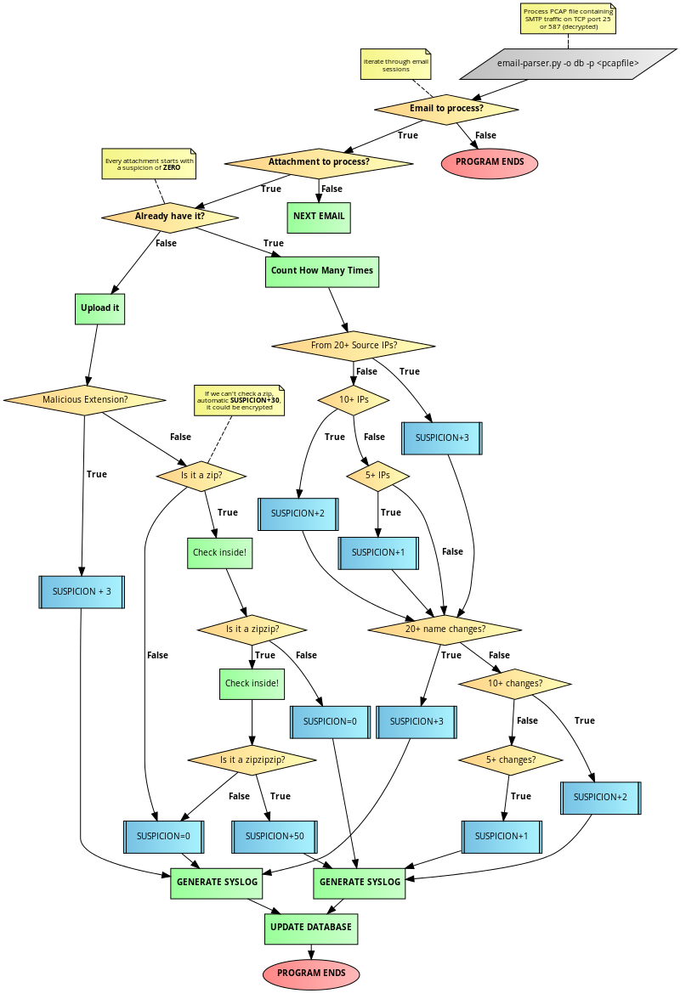

How it all works:
Suspicion is calculated in the python script (email-parser.py) by a number of factors.
Read the text below or click on the flow chart.
Every time an attachment is processed by the script, its suspicion starts at 0.
If the attachment is in the database:
Have we seen it from 20 unique IP addresses?
suspicion+3
Have we seen it from 10 unique IP addresses?
suspicion+2
Have we seen it from 5 unique IP addresses?
suspicion+1
Has the filename changed 20 or more times?
suspicion+3
Has the filename changed 10 or more times?
suspicion+3
Has the filename changed 5 or more times?
suspicion+1
If we don't have the attachment:
Is the filetype one we care about (could be malicious):
suspicion+3
Is the file a zip?
Can we check inside?
Is the filetype inside one we care about?
(suspicion+3)*2
Is the filetype another zip?
Can we check inside?
Is the filetype inside one we care about?
(suspicion+3)*2
Is the filetype another zip?
suspicion+50, we don't have all day
Can't check inside?
suspicion + 30, probably encrypted
{kind=link}